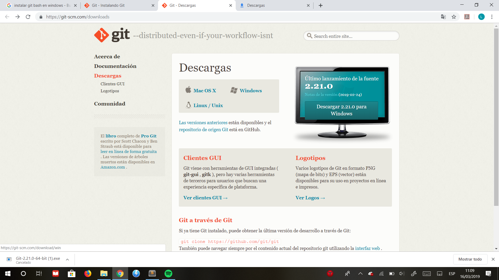
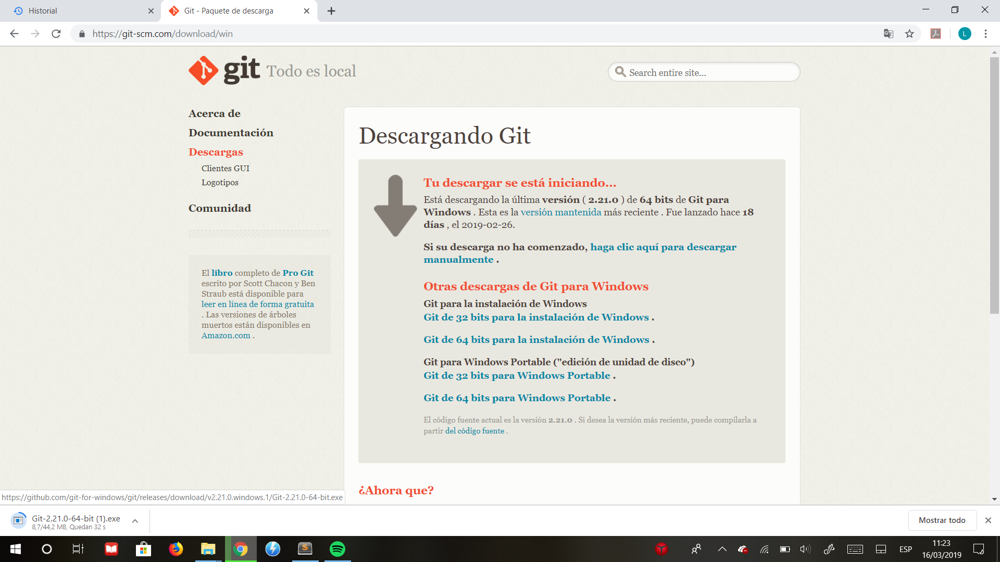
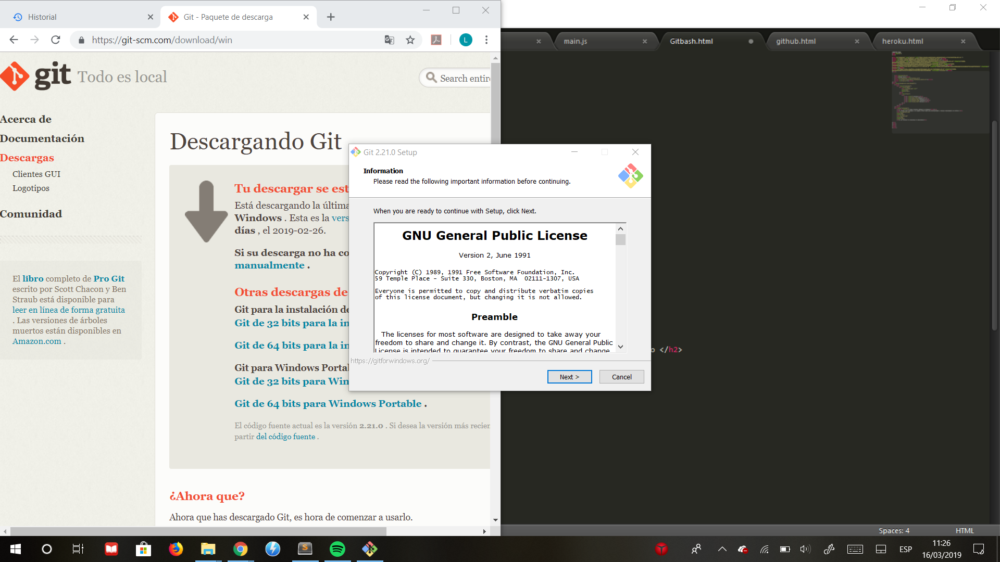
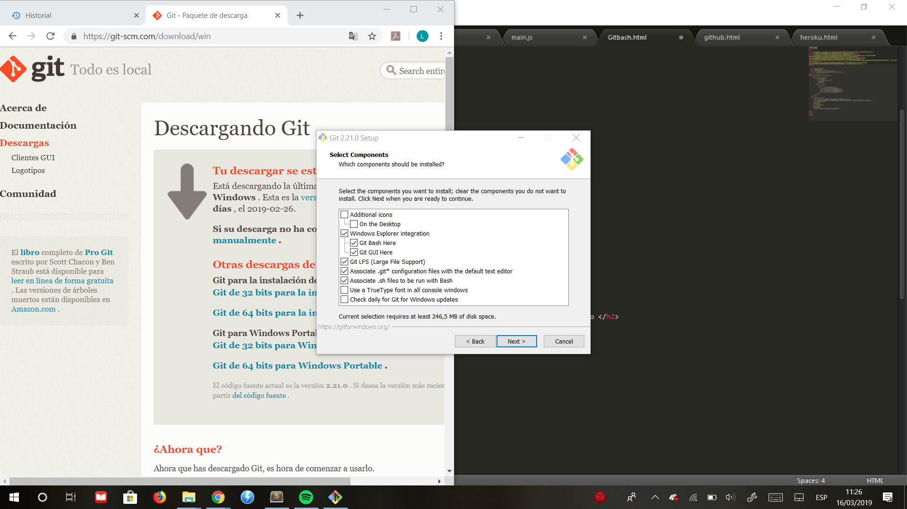
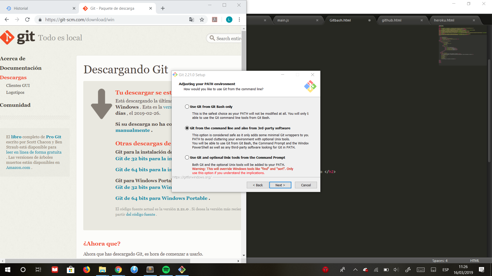
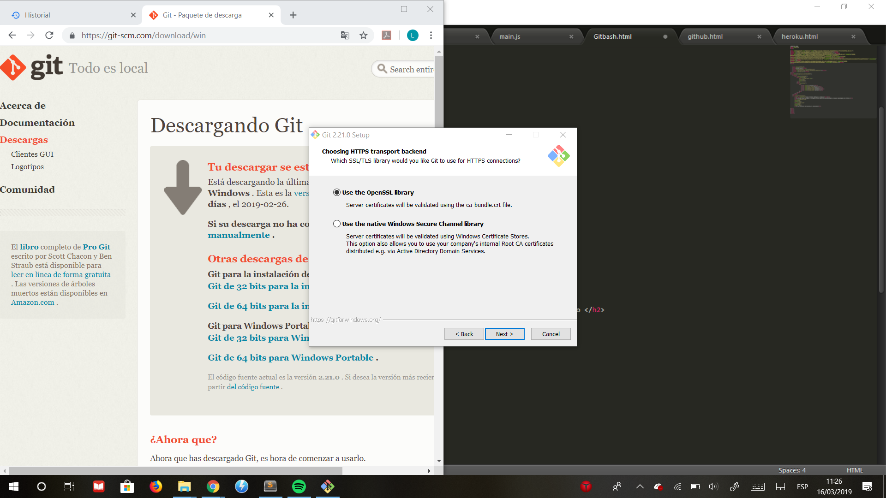
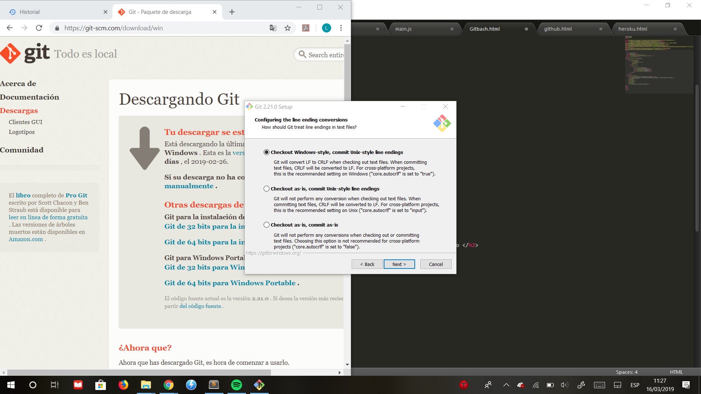
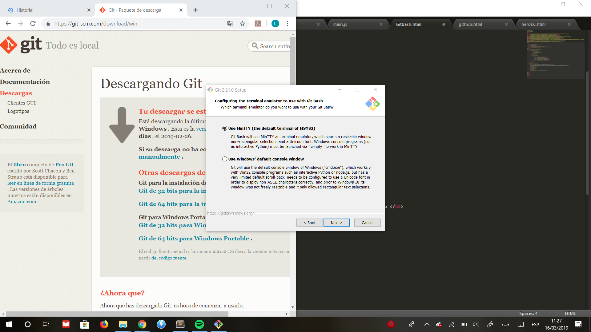
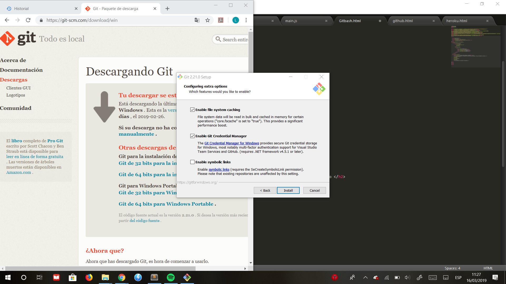

1.-Primer paso entramos a la pagina https://git-scm.com/downloads y despues descargamos el archivo.
 2.-Al terminar la descarga lo ejecutamos y seguimos la instalacion.
3.-seleccionamos los componentes que deseamos instalar.
4.-Elegimos el editor que sera uasdo por defecto por el git.
5.-Ajustamos el ambiente PATH.
6.-Despues seleccionamos la primera opcion de librerias le damos siguiente.
7.-Seleccionamos la primera opcion de configuracion de linea.
8.-Elegimos la opcion que nos da por defecto para la configuracion del emulador de terminal que usa el Git Bash.
9.-Despues elegimos las configuraciones de opciones extras.
10.-Despues de seleccionar la opciones extras instalamos el Git Bash y dejamos que se instale.
